Interactive practice for this lesson — it opens in a new tab.
Somewhere in the mid-1990s, a single episode of Friends managed to juggle three love stories, one career crisis, and a pair of bare floorboards — all in about twenty-two minutes. The episode, “The One Where Chandler Can't Remember Which Sister,” is Season 3, Episode 11 of the show, and it follows the series' famous naming habit of titling every episode “The One Where…” or “The One With…”. A lesson deck titled Learn English with 90s TV turns that half-hour into a structured course unit, promising “Vocabulary, Idioms & Character Analysis for B1–B2 Learners.” The deck was assembled with Gemini Notebook, and its pages read like a small language school disguised as a TV recap.
The educational value comes from the sheer range of real-life language packed into one story. In the first storyline, characters drink too much at a birthday party; in the second, a waitress fights her way into a fashion career; in the third, a musician confronts a noisy neighbor. That range hands learners the exact words adults need for parties, job interviews, complaints, and romantic disasters. This article walks through the entire lesson step by step: the three story tracks, the vocabulary, the grammar of calling somebody out, the hidden symbols, and — at the end — an interactive comprehension quiz.
The deck opens its analysis with an overview titled “Episode Snapshot: Three Stories in One.” It pins three photographs to a corkboard and captions each one. The first reads: “Track 1: Chandler's Mistake — He drinks too much and forgets which sister he kissed.” The second reads: “Track 2: Rachel's Big Break — Rachel tries to escape her terrible job, but Ross gets jealous.” The third reads: “Track 3: The Noisy Neighbor — Phoebe tries to complain, but falls for the charming neighbor instead.” Pay attention to this structure, because it is exactly why the episode teaches so well: each track lives in a different corner of everyday life, so the vocabulary divides itself naturally into party slang, workplace English, and neighborly diplomacy.
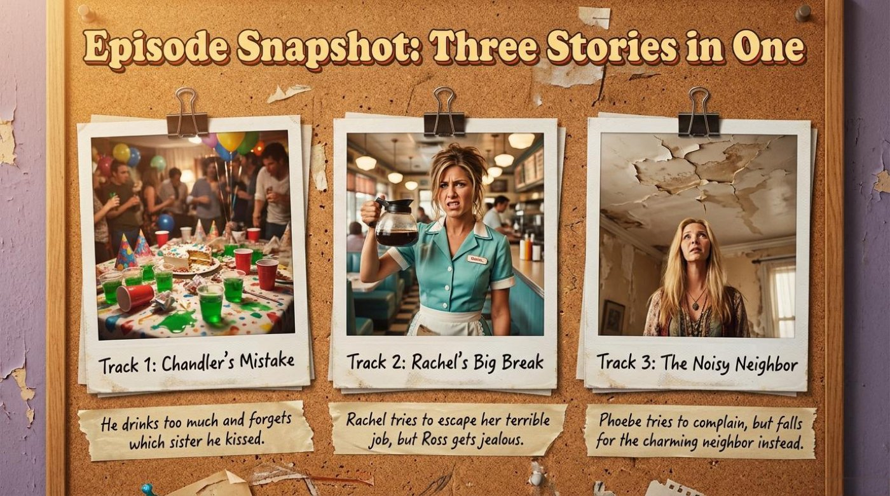
The deck summarizes the first track on a yellow notepad: “To get over his ex-girlfriend, Chandler drinks too many pure vodka Jell-O shots at Joey's birthday party.” It continues: “He fools around with one of Joey's sisters, Mary Angela, in a storage room.” Then comes the twist that gives the episode its title: “He has a blackout and can't remember which sister it was.” Notice how the deck tells a complete story in three sentences while quietly introducing five pieces of party vocabulary — get over, Jell-O shot, fool around, and blackout all appear in context, not in isolation.
The deck also freezes one line of dialogue on the slide, and it is a perfect real-life example of a face-saving apology: “Look, I wasn't sure which one Mary-Angela was. You all look really similar.” The line is funny because it is both an excuse and an insult — Chandler blames his memory while accidentally offending all the sisters at once. The slide's caption adds a joke of its own: “Cookie delivers the punchline—literally.” The deck's teaching point is worth remembering: comedy often works by taking a figurative word and making it physical.
💡 Practical advice: retell this track aloud in three past-tense sentences, exactly as the deck does. Storytelling about a night out is one of the most common real-life speaking tasks, and English needs the past simple for events plus past continuous for the background. It is also important to understand the register of words like fool around — casual euphemisms let speakers discuss sensitive topics without blunt language, and choosing them shows real social awareness.
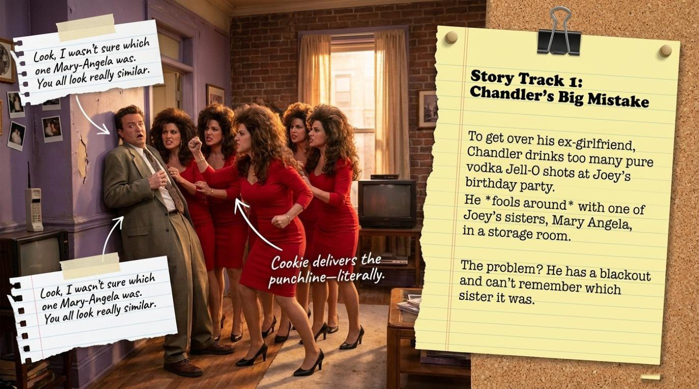
The second track moves from the party to the workplace. The deck states: “Rachel hates her demeaning job. A stranger named Mark helps her get an interview at Bloomingdale's. She aces the interview and gets the job!” In one breath the slide delivers demeaning, interview, and the wonderful verb ace — meaning to pass something brilliantly, with room to spare. The deck then turns to the dark side of the story: “Ross assumes Mark only wants to have sex with Rachel. He becomes incredibly insecure and toxic.” The word toxic is modern, high-frequency English for behavior that damages a relationship from the inside.
The slide's comic centerpiece is Ross's inner monologue, rendered as a speech bubble: “This dreamy guy is taking my girlfriend out for a meal... he is going to surgically remove the boyfriend!” The humor rests on hyperbole — nobody literally performs surgery on a rival — and on the mock-formal register of surgically remove, which sounds like a medical report applied to a love triangle. It should be noted that the deck later labels Ross's behavior with a full judgment ladder: jealousy, insecurity, control.
💡 Practical advice: the deck's true/false exercise adds a concrete detail worth stealing for your own conversations — Rachel's old job at Fortunata Fashions “requires her to sort hangers and make coffee.” Verbs like sort, make coffee, and wait tables describe unglamorous work honestly and vividly. When you describe your own job or a past job, build sentences around small physical verbs rather than vague nouns; listeners instantly picture the work.
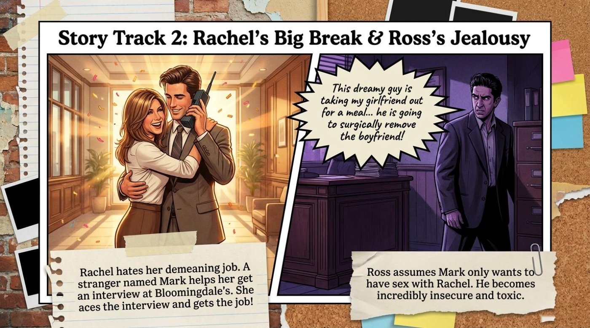
The third track is the shortest and the sweetest. The deck writes: “Phoebe goes upstairs to complain to the noisy neighbor who removed all his carpets. Instead of telling him to step lightly, she finds him incredibly charming and starts dating him.” The slide also smuggles in a bonus word with a note that reads: “Eavesdropping (verb): Secretly listening to a conversation. (Monica and Rachel accidentally eavesdrop on Phoebe's date through the thin ceiling).” To eavesdrop is to listen in where you were not invited, and the thin ceiling between the apartments turns the whole building into one shared conversation.
The key point is the subverted expectation: a complaint scene becomes a meet-cute. Phoebe climbs the stairs armed with righteous anger and descends with a date. The deck's caption on the snapshot slide says it plainly — “Phoebe tries to complain, but falls for the charming neighbor instead.” Real life performs the same trick surprisingly often, which is exactly why the vocabulary of polite complaints deserves practice.
💡 Practical advice: build a three-step complaint ladder and keep it declarative. Step one, name the problem politely: “I need to talk to you about the noise.” Step two, make a firm request: “Please keep the music down after eleven.” Step three, state the consequence calmly: “If it continues, I will contact the building manager.” Phoebe's plan collapses because charm interrupts the ladder — yours should survive small talk.
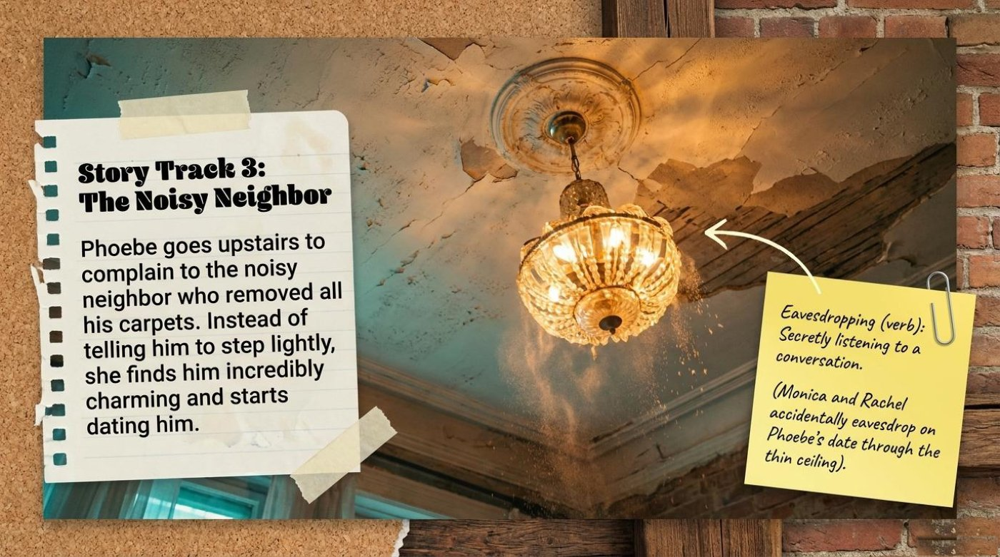
Between the story slides, the deck inserts a grammar page titled “Grammar Focus: Giving Advice & Calling Out.” Its core rule is worth quoting in full: “In English, when someone is acting terribly, we drop the subject ('You') and use base Imperative Verbs to give direct, forceful advice. Monica refuses to accept Ross's garbage behavior.” The slide then lines up the three forms Monica uses: a gentle suggestion pattern for a friendly check-in, followed by two full-force commands — “Get over yourself!”, glossed as “Stop being so arrogant and self-centered,” and “Grow up!”, glossed as “Start acting like a mature adult.”
🎓 The deck circles one reminder in red ink: “Notice how Monica uses imperatives to cut through Ross's toxic complaints and force him to look at his own behavior.” That is the cultural lesson inside the grammar lesson: bare imperatives signal equality and urgency between close friends, and softening them too much would weaken Monica's point.
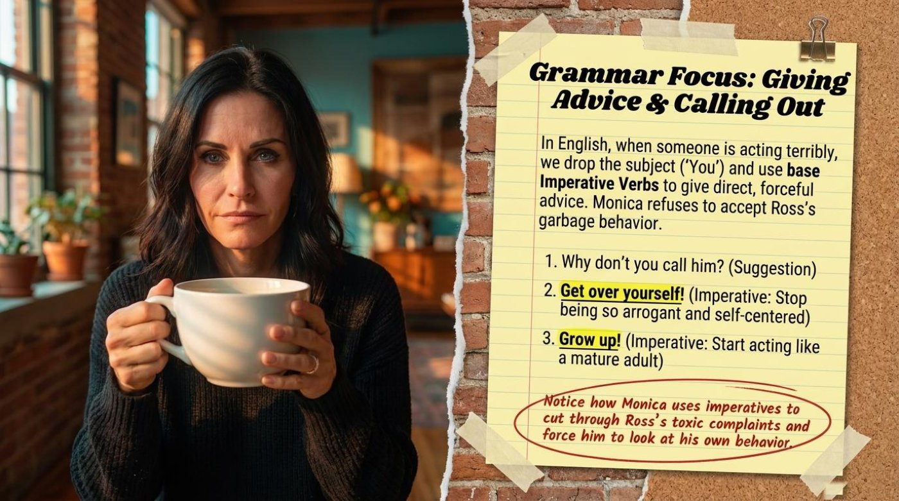
Every word in this lesson belongs to the same unglamorous, essential theme: adulting in English. The episode talks about hangovers and job interviews in the same breath, because real life does. The deck's vocabulary pages are titled “Visual Vocabulary: The Party” and “Visual Vocabulary: The Workplace,” and they teach through annotated photos — sticky notes pinned directly onto the scenes where the words happen. Study each item below in its four layers: the literal meaning, the contextual meaning, the example from the material, and the way the deck itself explains it.
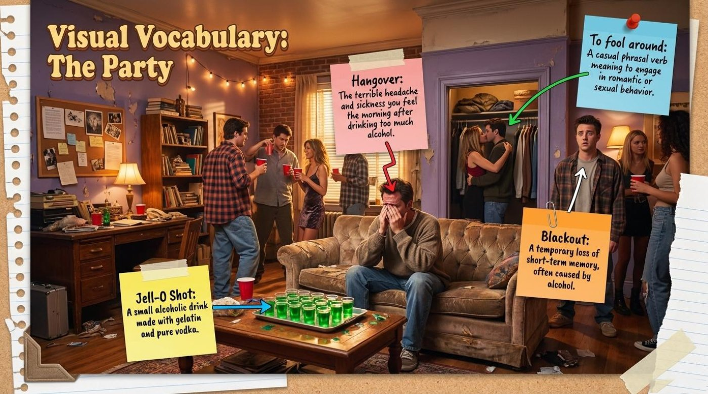
Jell-O shot — noun
Hangover — noun
Blackout — noun
Fool around (with somebody) — phrasal verb
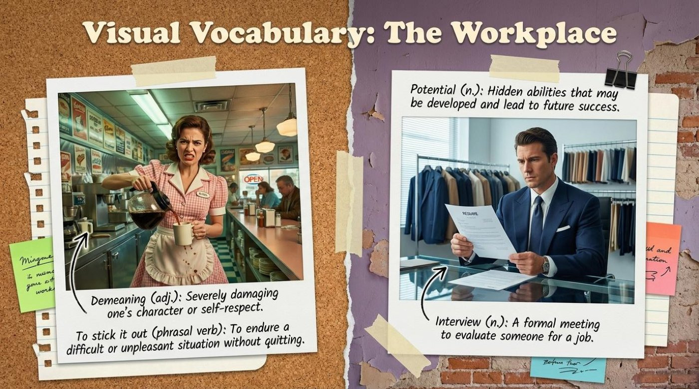
Demeaning — adjective
Stick it out — phrasal verb
Potential — noun
Interview — noun
The deck devotes a full slide to “Slang & Idioms in Action,” and it stages the idioms as speech bubbles over old television sets. Chandler's bubble reads: “I may have jumped the gun here.” Ross wonders, in the deck's words, why else Mark would just swoop in out of nowhere. And Chandler shrugs with the third: “I just needed to blow off some steam.” Three bubbles, three different emotional jobs: admitting a mistake, accusing a rival, and excusing yourself.
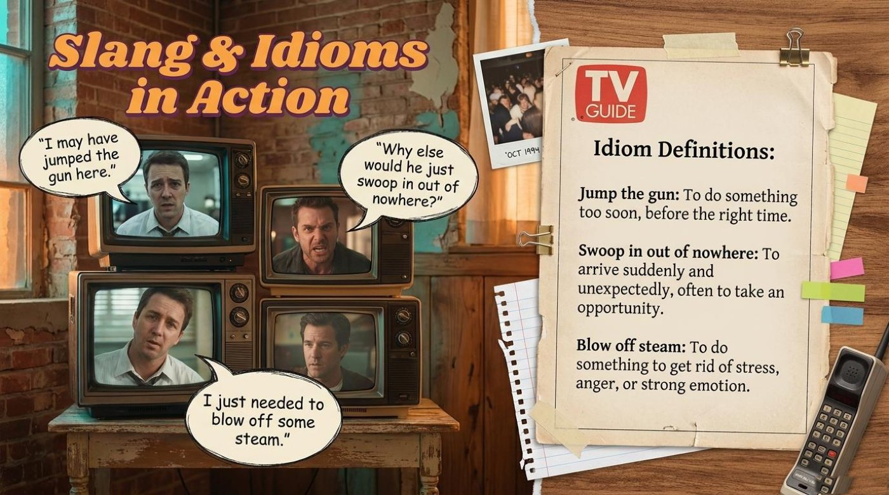
The cards below gather the nine key terms of the lesson on one playing field. Each card shows the English term and a teaser on the front, and hides the literal meaning, the contextual meaning, an example from the material, and a note on why the word matters on the back. Click or press Enter to flip a card, and use the button to turn the whole deck over at once.
A good sitcom hides its lessons inside objects, and this deck has trained itself to notice them. Four elements from the slides deserve a second look, because each one turns a piece of furniture or a food item into an idea — and each one adds a phrase to your interpretive toolkit.
The deck's synthesis slide is a green chalkboard titled “Synthesis: The Boyfriend Behavior Matrix.” It draws Chandler, marked with a little vodka bottle, against Ross, marked with a glowing jealous eye, and compares them across four rows. Under The Mistake, Chandler's entry reads “Drunken physical comedy; forgets who he kissed,” while Ross's reads “Jealousy and toxic insecurity about Rachel's career.” Under The Intent, Chandler “just wanted to blow off steam; accidental harm,” while Ross is “self-centered; wants to control Rachel's attention.” Under The Reaction, Chandler comes across as “endearing, apologetic, and squirming with guilt,” while Ross is “immature, sniveling, and defensive.” And under The Consequence, Chandler “gets punched in the face by Cookie,” while Ross “takes an emotional hit when Rachel ignores him to hug Mark.”
The matrix matters because it teaches comparison as a way of thinking, not just as a grammar exercise. Both men behave badly, yet the slide's structure separates the body from the ego: Chandler's fault is an accident of chemistry, Ross's fault is an act of control. Learners absorb a whole vocabulary of judgment — mistake, intent, reaction, consequence — and discover that mature analysis means asking what somebody intended, not only what they did.
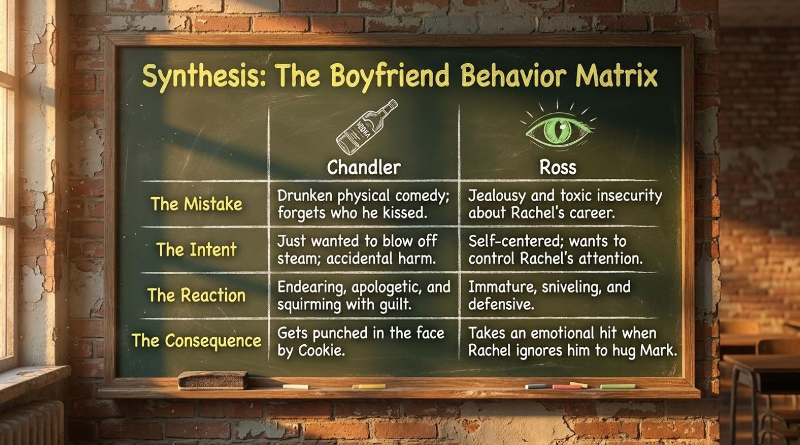
One caption on the Chandler slide deserves its own museum plaque: “Cookie delivers the punchline—literally.” A punchline is the last line of a joke, the sentence that makes the room laugh. In the story, though, the word punch stops being figurative: one of Joey's sisters named Cookie literally strikes Chandler, so the punchline physically lands on his face. The deck's caption is itself a joke built from the double meaning — and jokes are glue for vocabulary.
The deeper significance is that English constantly borrows violence for comedy and comedy for violence. When a learner notices a pun like this, the two meanings weld together, and the word punchline becomes unforgettable. It should be noted that this is also a reading-comprehension skill: understanding English humor often depends on spotting which half of a double meaning the writer intends.
Phoebe's storyline gives the deck its most poetic object: the ceiling. The note on the story slide explains, “Monica and Rachel accidentally eavesdrop on Phoebe's date through the thin ceiling.” The ceiling is a wall that forgot how to be a wall — it separates floors but transmits gossip, dates, and complaints. In the grammar of the show, the apartment building behaves like one enormous shared brain, and the ceiling is its eavesdropping ear.
The word itself carries the same image. Eavesdrop descends from the drops of rainwater that fall from the eaves — the overhanging edges of a roof — where a silent listener could stand just outside the wall and hear everything inside. The deck's footnote turns a sitcom gag into a tiny etymology lesson, and the lesson generalizes: English words frequently preserve the physical picture of an old habit, and knowing the picture makes the word permanent.
Finally, there is the neighbor's floor. The snapshot slide sets up the conflict in one line — the upstairs man “removed all his carpets” — and the story slide resolves it with a shrug: “Instead of telling him to step lightly, she finds him incredibly charming and starts dating him.” The bare floorboards are a perfect symbol of everyday inconsiderateness: noise with no malice behind it, just a lifestyle that forgot other people exist. The deck even gives Phoebe the perfect imaginary instruction, step lightly, which doubles as figurative advice for handling people.
The significance cuts both ways. On one side stands the vocabulary of boundaries — noise, complaints, consequences. On the other stands the warning that first impressions rewrite plans: Phoebe arrives as a prosecutor and leaves as a girlfriend. The key point for a learner is narrative flexibility — the same scene can be rehearsed as a complaint dialogue or a love story, and strong speakers can tell it both ways.
The deck closes its practice with two comprehension pages, and the quiz below recreates their spirit with instant feedback. Eight questions cover story details, vocabulary in context, true-or-false statements, and idioms, and every answer triggers a short explanation built from the material. Choose an option with a click or with the keyboard, watch the score bar and the progress dots react, and read the verdict at the end.
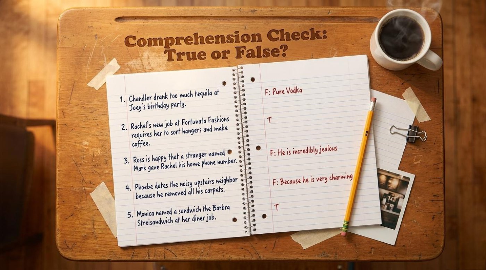
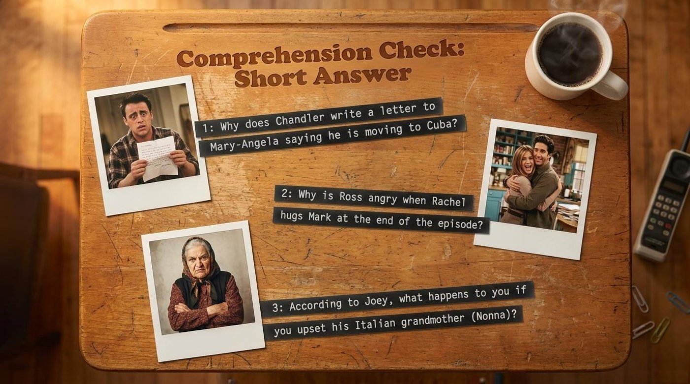
📌 The deck's short-answer page deserves a special mention because it points beyond the slides. One prompt concerns the letter in which Chandler claims he is moving to Cuba — a desperate, face-saving excuse designed to put an ocean between himself and Mary Angela once the truth catches up with him. Another prompt concerns Ross's anger at the end of the episode, when Rachel ignores him to hug Mark and he takes what the behavior matrix calls an emotional hit. The third concerns Joey's warning about his Italian grandmother, the Nonna, whose protection Joey invokes with total seriousness. Prompts like these work because they demand full sentences, and full sentences are where vocabulary turns into fluency.
The final slide of the deck is titled “Lesson Wrap-Up & Discussion,” and its instruction line is the best summary of the whole method: “Discuss these questions with a partner using the vocabulary you learned today.” The slide then sets a character debate between Chandler and Ross, invites a real-life connection about sticking out a demeaning job like Rachel's, and adds a cultural question about Joey's conviction that “men are never nice to strange women for no reason.” The takeaway is built into that design: watching a 90s sitcom supplies the language, but only speaking it out loud makes it yours.
Remember that the deepest lesson of the deck is structural. Mistakes have an anatomy — mistake, intent, reaction, consequence — and the same anatomy applies to language learning itself. A wrong answer is a mistake without malice, a hangover word you will shake off by morning, and the only true failure is a blackout, a gap where the material was supposed to be. So rewatch the episode with the three tracks in mind, retell each track aloud using at least five words from the flip-cards, argue the behavior matrix with a friend, and review the original slides whenever a definition slips. The coffee house is always open.
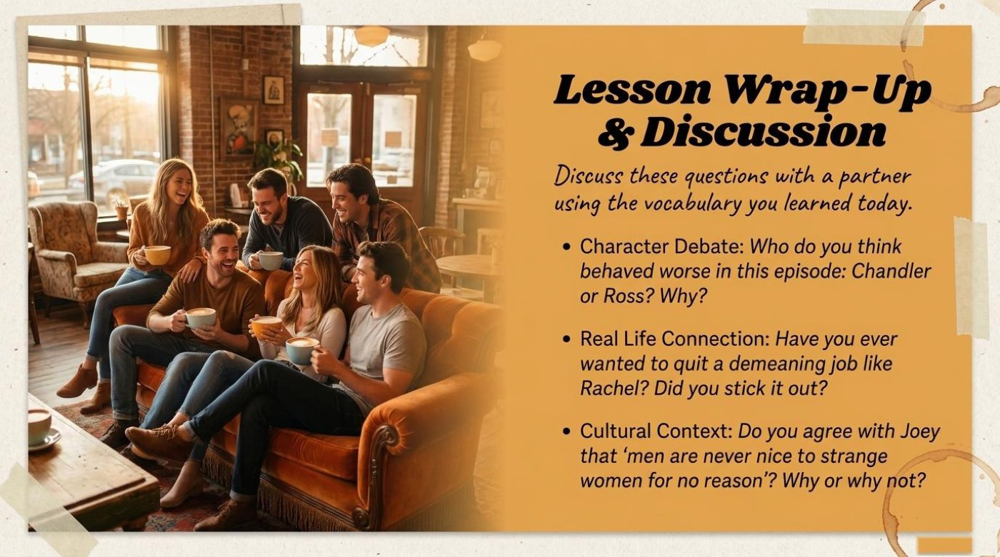
The complete original slide deck accompanies this article: